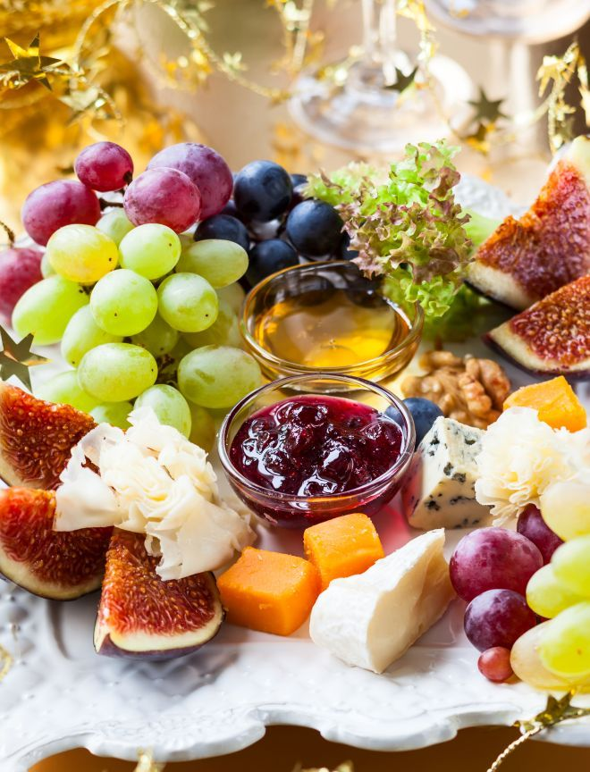

Formaggi e Frutta

Description
Formaggi e Frutta is a sophisticated Italian pairing that celebrates the harmony of creamy cheeses and vibrant fruits. A selection of rich, velvety cheeses—like Gorgonzola, Taleggio, and Parmigiano-Reggiano—meets the natural sweetness of fresh figs, juicy grapes, and crisp apples. Each bite is a luscious dance of sweet and savory.
The cheeses’ tangy, nutty, and creamy profiles are elevated by the fruits’ refreshing brightness, while a drizzle of honey or balsamic glaze adds a luxurious finish. Paired with crusty bread or crackers, Formaggi e Frutta is an elegant yet effortless dish, perfect for indulging in life’s simplest, most exquisite pleasures.
Ingredients
Cheeses:
- 3.5 oz aged Pecorino
- 3.5 oz creamy Brie or Camembert
- 3.5 oz tangy Gorgonzola or blue cheese
- 3.5 oz fresh goat cheese
Fresh Fruits:
- 2 ripe figs, quartered
- 1 small bunch of grapes (red or green)
- 1 ripe pear, thinly sliced
- 1 ripe apple, thinly sliced
- 1 small handful of fresh berries (strawberries, raspberries, or blueberries)
Accompaniments:
- 50 g (1/4 cup) raw or lightly toasted walnuts or almonds
- 2 tbsp honey or fig jam
- Fresh herbs (like mint or thyme) for garnish
- Crackers or thinly sliced baguette (optional)
Steps
- Choose the freshest seasonal fruits available. Wash and pat them dry. Slice the pear and apple just before serving to prevent browning, or brush them lightly with lemon juice to keep them fresh.
- Place the cheeses on a large serving board or platter, spacing them apart to leave room for the fruits and accompaniments. Cut a few slices or wedges from each cheese to invite guests to serve themselves.
- Arrange the fruits around the cheeses in a visually appealing way. Cluster grapes and berries together for pops of color, and fan out the pear and apple slices.
- Scatter the nuts around the platter for texture and crunch. Place a small bowl of honey or fig jam on the board with a spoon for easy drizzling. Add crackers or baguette slices on the side if desired.
- Garnish the platter with fresh mint or thyme sprigs for a touch of greenery. Serve immediately at room temperature to enhance the flavors of the cheeses.
Squisito!
Home